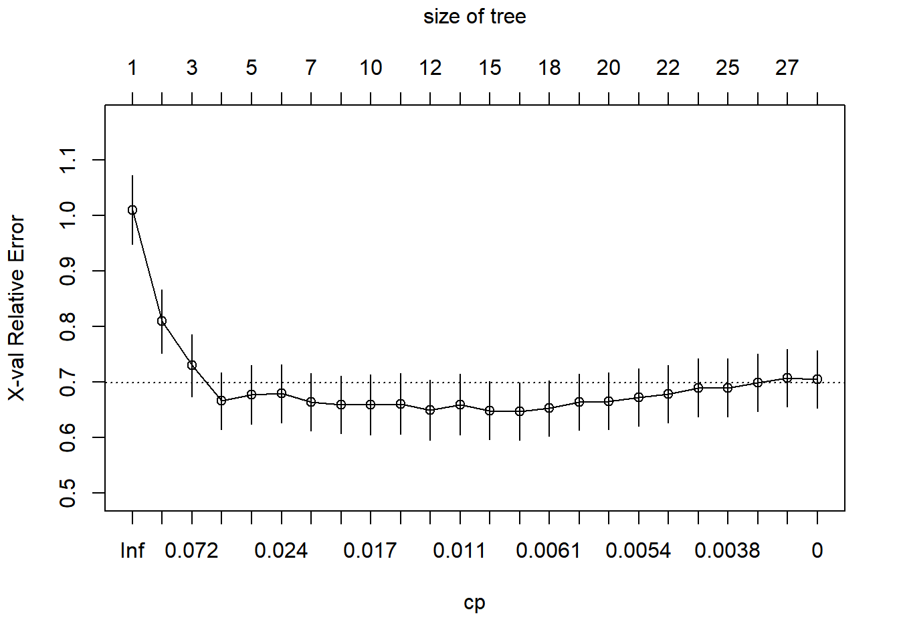
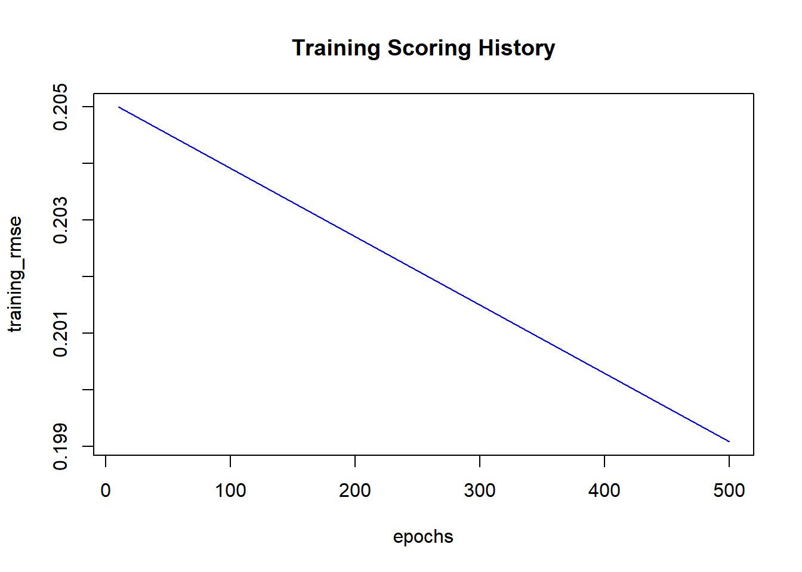

Warning: package 'Metrics' was built under R version 4.4.1Machine Learning Regression
1 Linear Regression Analysis
To build and evaluate a linear regression model to predict the progression of diabetes using various attributes from the dataset.
1.1 Install Required Packages
1.2 Load the Dataset
Code
diabetes <- read.csv("Datasets/diabetes.csv")1.3 Examine the Dataset
Code
str(diabetes)'data.frame': 442 obs. of 11 variables:
$ age : num 0.03808 -0.00188 0.0853 -0.08906 0.00538 ...
$ sex : num 0.0507 -0.0446 0.0507 -0.0446 -0.0446 ...
$ bmi : num 0.0617 -0.0515 0.0445 -0.0116 -0.0364 ...
$ bp : num 0.02187 -0.02633 -0.00567 -0.03666 0.02187 ...
$ s1 : num -0.04422 -0.00845 -0.0456 0.01219 0.00393 ...
$ s2 : num -0.0348 -0.0192 -0.0342 0.025 0.0156 ...
$ s3 : num -0.0434 0.07441 -0.03236 -0.03604 0.00814 ...
$ s4 : num -0.00259 -0.03949 -0.00259 0.03431 -0.00259 ...
$ s5 : num 0.01991 -0.06833 0.00286 0.02269 -0.03199 ...
$ s6 : num -0.01765 -0.0922 -0.02593 -0.00936 -0.04664 ...
$ diabetes: num 151 75 141 206 135 97 138 63 110 310 ...1.4 Split the Data
Split the data into training and testing sets with a ratio of 70:30:
1.5 Build the Linear Regression Model
Create the linear regression model using the training set:
Code
lr.mod <- lm(diabetes ~ ., data = train1)1.6 Summarize the Model
Display the summary of the model to understand the coefficients and residuals:
Code
summary(lr.mod)
Call:
lm(formula = diabetes ~ ., data = train1)
Residuals:
Min 1Q Median 3Q Max
-139.901 -41.355 -1.631 39.170 146.020
Coefficients:
Estimate Std. Error t value Pr(>|t|)
(Intercept) 152.44904 3.13631 48.608 < 2e-16 ***
age -15.57697 74.79887 -0.208 0.83517
sex -212.91860 75.02052 -2.838 0.00485 **
bmi 588.64386 83.56801 7.044 1.30e-11 ***
bp 218.09127 82.23542 2.652 0.00843 **
s1 -912.80361 485.98295 -1.878 0.06132 .
s2 602.22823 396.07268 1.520 0.12945
s3 136.25634 249.00911 0.547 0.58465
s4 123.68058 187.39997 0.660 0.50978
s5 901.55715 208.75437 4.319 2.14e-05 ***
s6 0.06945 80.30125 0.001 0.99931
---
Signif. codes: 0 '***' 0.001 '**' 0.01 '*' 0.05 '.' 0.1 ' ' 1
Residual standard error: 54.78 on 298 degrees of freedom
Multiple R-squared: 0.5312, Adjusted R-squared: 0.5154
F-statistic: 33.76 on 10 and 298 DF, p-value: < 2.2e-161.7 Evaluate the Model
Perform predictions on the test set and evaluate the model’s performance using RMSE (Root Mean Squared Error):
1.8 Interpretation of Results
- Coefficients: The “Estimate” column in the summary output lists the coefficients (slopes) for each attribute, which indicates the relationship between the predictor and the outcome variable.
- Residuals: The residuals indicate how well the model fits the data, represented by the vertical distances between the actual data points and the regression line.
- RMSE: The root mean squared error (RMSE) measures the average deviation of predictions from the actual values. A lower RMSE indicates a better fit of the model.
2 Decision Tree
2.1 Install and Load Required Packages
2.2 Load the Dataset
Code
diabetes <- read.csv("Datasets/diabetes.csv")2.3 Examine the Dataset Structure
Code
str(diabetes)'data.frame': 442 obs. of 11 variables:
$ age : num 0.03808 -0.00188 0.0853 -0.08906 0.00538 ...
$ sex : num 0.0507 -0.0446 0.0507 -0.0446 -0.0446 ...
$ bmi : num 0.0617 -0.0515 0.0445 -0.0116 -0.0364 ...
$ bp : num 0.02187 -0.02633 -0.00567 -0.03666 0.02187 ...
$ s1 : num -0.04422 -0.00845 -0.0456 0.01219 0.00393 ...
$ s2 : num -0.0348 -0.0192 -0.0342 0.025 0.0156 ...
$ s3 : num -0.0434 0.07441 -0.03236 -0.03604 0.00814 ...
$ s4 : num -0.00259 -0.03949 -0.00259 0.03431 -0.00259 ...
$ s5 : num 0.01991 -0.06833 0.00286 0.02269 -0.03199 ...
$ s6 : num -0.01765 -0.0922 -0.02593 -0.00936 -0.04664 ...
$ diabetes: num 151 75 141 206 135 97 138 63 110 310 ...2.4 Split the Dataset
Split the dataset into training (70%) and test (30%) sets. The training set is used for training and creating the model. The test set is to evaluate the accuracy of the model.
2.5 Build the Regression Tree
Build a regression tree using the rpart function:
Code
reg_tree <- rpart(diabetes ~ ., data = train2, method = "anova", control = rpart.control(cp = 0))2.6 Plot the Decision Tree
Plot and visualize the decision tree:
2.7 Evaluate the Tree
Evaluate the tree using the test set and calculate the root mean squared error (RMSE):
2.8 Prune the Tree
2.8.1 Pre-pruning
Perform pre-pruning by specifying parameters like maxdepth, minsplit, and minbucket:
Code
reg_tree_es <- rpart(diabetes ~ ., data = train2, method = "anova", control = rpart.control(cp = 0, maxdepth = 6, minsplit = 70))
test2$pred2 <- predict(reg_tree_es, test2)
rmse(test2$diabetes, test2$pred2)[1] 59.391142.8.2 Post-pruning
Perform post-pruning based on the cost complexity parameter (cp):
- Display the cp table:
Code
printcp(reg_tree)
Regression tree:
rpart(formula = diabetes ~ ., data = train2, method = "anova",
control = rpart.control(cp = 0))
Variables actually used in tree construction:
[1] age bmi bp s1 s2 s3 s4 s5 s6 sex
Root node error: 1776387/309 = 5748.8
n= 309
CP nsplit rel error xerror xstd
1 0.2794866 0 1.00000 1.00993 0.061746
2 0.1033478 1 0.72051 0.80888 0.057584
3 0.0506982 2 0.61717 0.72940 0.056425
4 0.0296834 3 0.56647 0.66557 0.051076
5 0.0275351 4 0.53678 0.67707 0.052823
6 0.0202890 5 0.50925 0.67891 0.052809
7 0.0191317 6 0.48896 0.66392 0.051870
8 0.0168215 7 0.46983 0.65904 0.051875
9 0.0165936 9 0.43619 0.65912 0.054532
10 0.0142398 10 0.41959 0.66039 0.054575
11 0.0118790 11 0.40535 0.64928 0.054539
12 0.0101360 12 0.39347 0.65917 0.054879
13 0.0075380 14 0.37320 0.64843 0.052819
14 0.0064456 15 0.36566 0.64715 0.051890
15 0.0058058 17 0.35277 0.65235 0.050371
16 0.0057446 18 0.34697 0.66358 0.050491
17 0.0056112 19 0.34122 0.66511 0.051137
18 0.0052524 20 0.33561 0.67190 0.051576
19 0.0041069 21 0.33036 0.67786 0.051616
20 0.0038584 23 0.32214 0.68940 0.052154
21 0.0036522 24 0.31829 0.68940 0.052154
22 0.0028755 25 0.31463 0.69839 0.052086
23 0.0012217 26 0.31176 0.70696 0.052295
24 0.0000000 27 0.31054 0.70427 0.051950- Plot the cp values against the cross-validated error:
Code
plotcp(reg_tree)
- Find the best cp value that minimizes the cross-validated error:
Code
bestcp <- reg_tree$cptable[which.min(reg_tree$cptable[,"xerror"]),"CP"]- Build the pruned tree and evaluate it:
Code
reg_tree_prune <- rpart(diabetes ~ ., data = train2, method = "anova", control = rpart.control(cp = bestcp))
test2$pred3 <- predict(reg_tree_prune, test2)
rmse(test2$diabetes, test2$pred3)[1] 65.806632.9 Export the Tree
Create a postscript file of the tree for generating a PDF:
Code
post(reg_tree_prune, file = "reg_tree_prune.ps", title = "Regression Tree for Diabetes Dataset")3 Neural Network_Regression
3.1 Install and Load Required Packages
----------------------------------------------------------------------
Your next step is to start H2O:
> h2o.init()
For H2O package documentation, ask for help:
> ??h2o
After starting H2O, you can use the Web UI at http://localhost:54321
For more information visit https://docs.h2o.ai
----------------------------------------------------------------------
Attaching package: 'h2o'The following objects are masked from 'package:stats':
cor, sd, varThe following objects are masked from 'package:base':
%*%, %in%, &&, ||, apply, as.factor, as.numeric, colnames,
colnames<-, ifelse, is.character, is.factor, is.numeric, log,
log10, log1p, log2, round, signif, trunc3.2 Initialize H2O
Before building the model, initialize the H2O instance:
Code
h2o.init(nthreads=-1, max_mem_size="2G") Connection successful!
R is connected to the H2O cluster:
H2O cluster uptime: 13 minutes 23 seconds
H2O cluster timezone: Asia/Singapore
H2O data parsing timezone: UTC
H2O cluster version: 3.44.0.3
H2O cluster version age: 6 months and 18 days
H2O cluster name: H2O_started_from_R_drsau_rjb539
H2O cluster total nodes: 1
H2O cluster total memory: 1.76 GB
H2O cluster total cores: 8
H2O cluster allowed cores: 8
H2O cluster healthy: TRUE
H2O Connection ip: localhost
H2O Connection port: 54321
H2O Connection proxy: NA
H2O Internal Security: FALSE
R Version: R version 4.4.0 (2024-04-24 ucrt) Warning in h2o.clusterInfo():
Your H2O cluster version is (6 months and 18 days) old. There may be a newer version available.
Please download and install the latest version from: https://h2o-release.s3.amazonaws.com/h2o/latest_stable.html3.3 Load the Dataset
Load the dataset into R and convert it to an H2O frame:
3.4 Examine the Data
Check the structure of the data:
Code
str(consultation.frame)Class 'H2OFrame' <environment: 0x000002492dbaa180>
- attr(*, "op")= chr "Parse"
- attr(*, "id")= chr "consultation_sid_af8b_1"
- attr(*, "eval")= logi FALSE
- attr(*, "nrow")= int 5962
- attr(*, "ncol")= int 6
- attr(*, "types")=List of 6
..$ : chr "string"
..$ : chr "real"
..$ : chr "int"
..$ : chr "string"
..$ : chr "string"
..$ : chr "real"
- attr(*, "data")='data.frame': 10 obs. of 6 variables:
..$ Qualification: chr "BHMS, MD - Homeopathy" "BAMS, MD - Ayurveda Medicine" "MBBS, MS - Otorhinolaryngology" "BSc - Zoology, BAMS" ...
..$ Experience : num 24 12 9 12 20 8 42 10 14 23
..$ Rating : num 100 98 95 95 100 95 95 99 95 95
..$ Place : chr "Kakkanad, Ernakulam" "Whitefield, Bangalore" "Mathikere - BEL, Bangalore" "Bannerghatta Road, Bangalore" ...
..$ Profile : chr "Homeopath" "Ayurveda" "ENT Specialist" "Ayurveda" ...
..$ Fees : num 100 350 300 250 250 100 200 200 100 1003.5 Normalize the Data
Normalize the columns “Experience”, “Rating”, and “Fees” as they are in different ranges:
3.6 Split the Data into Training and Test Sets
Split the data into training (70%) and test (30%) sets:
Code
split <- h2o.splitFrame(consultation.frame, ratios = 0.7)
train3 <- split[[1]]
test3 <- split[[2]]3.7 Build the Neural Network Model
Build the neural network model with default parameters:
Code
nn <- h2o.deeplearning(
x = c(1, 4, 5, 7, 8),
y = 9,
training_frame = train3,
epochs = 500,
mini_batch_size = 32,
hidden = c(20, 20),
seed = 1
)Warning in .h2o.processResponseWarnings(res): Dropping bad and constant columns: [Qualification, Place, Profile].
|
| | 0%
|
|================================ | 46%
|
|======================================================================| 100%3.8 Plot the Scoring History
Visualize the scoring history of the model:
Code
plot(nn)
3.9 Make Predictions and Evaluate the Model
Perform predictions on the test data and evaluate the model’s performance using RMSE:
Code
pred1 <- h2o.predict(nn, test3)
|
| | 0%
|
|======================================================================| 100%Code
rmse(test3$Fees.norm, pred1)[1] 0.20055473.10 Implement Early Stopping
Add early stopping parameters to the model:
Code
nn <- h2o.deeplearning(
x = c(1, 4, 5, 7, 8),
y = 9,
training_frame = train3,
epochs = 500,
mini_batch_size = 32,
hidden = c(20, 20),
seed = 1,
stopping_metric = "rmse",
stopping_rounds = 3,
stopping_tolerance = 0.05,
score_interval = 1
)Warning in .h2o.processResponseWarnings(res): Dropping bad and constant columns: [Qualification, Place, Profile].
|
| | 0%
|
|========================= | 36%
|
|======================================================================| 100%Code
pred2 <- h2o.predict(nn, test3)
|
| | 0%
|
|======================================================================| 100%Code
rmse(test3$Fees.norm, pred2)[1] 0.19871443.11 Implement Dropout Regularization
Add dropout regularization to improve generalization:
Code
nn <- h2o.deeplearning(
x = c(1, 4, 5, 7, 8),
y = 9,
training_frame = train3,
epochs = 500,
mini_batch_size = 32,
hidden = c(20, 20),
seed = 1,
stopping_metric = "rmse",
stopping_rounds = 3,
stopping_tolerance = 0.05,
score_interval = 1,
activation = "RectifierWithDropout",
hidden_dropout_ratio = c(0.5, 0.5),
input_dropout_ratio = 0.1
)Warning in .h2o.processResponseWarnings(res): Dropping bad and constant columns: [Qualification, Place, Profile].
|
| | 0%
|
|==================================================== | 74%
|
|======================================================================| 100%Code
pred3 <- h2o.predict(nn, test3)
|
| | 0%
|
|======================================================================| 100%Code
rmse(test3$Fees.norm, pred3)[1] 0.2004876